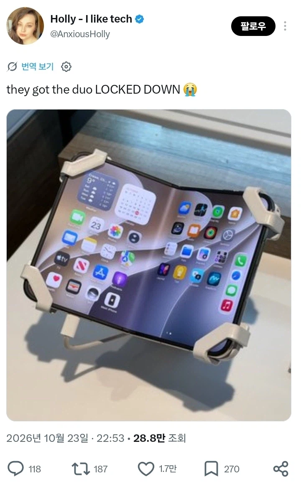

비슷한 야동을 본 거 같은;;;

비슷한 야동을 본 거 같은;;;
매번 박히다보니 주가랑 별개로 민심 박히는 타이밍도 잘보나봄
귀갑묶기;
코스트코가 그냥 아이폰이랑 애플워치도 저렇게 속박? 해서 전시해두던데 코스트코인가 ㅋㅋㅋ
아예 바닥에 고정해놔서 폰을 들어볼수도 없어서 정떨어지더라.
한국에 저거 훔쳐갈 병신새끼가 몇이나 있다고 ㅋㅋㅋ
옆에 갤럭시는 잘만 들어지는거 보니까 애플 자체 정책 같음
그것보단 지금 설계불량(추정) 때문에 접었다가 펴기만 해도 화면 박살나는 이슈 때문에
못 접게 한 것 같음
ㅇㅇ. 뭔말인지 알아들음.
근데 진짜로 코스트코 가면 아이폰 모든 시리즈 바닥에 고정해놓고 전시함.
실제로 보면 좀 많이 불쾌함. 나도 그 생각나서 말한거
그렇다기엔 공식 애플스토어에선 걍 맘대로 들고 확인할수도 있고 줄같은것도 없는데
한국 코스트코 기묘하게 도둑들많음 ㅋㅋ
ㄴㄴ 애플스토어 본점(여의도 홍대 신사 이런곳)은 아예 락 아무것도 안걸려있음. 어차피 전시용폰들은 지오펜싱으로 위치 벗어나면 걍 자동으로 기기 봉인됨
접고 피고 못 하게 한건가 ㅋㅋㅋ

좀 야한데?
과격한 서양
야동에서 본 것 같은 자세잖아 요거요거
애플스토어는 맞긴함? ㅋㅋㅋㅋㅋㅋㅋ
ㅋㅋ 접는것도 기능 아닌가.. 막네
이야... 팀쿡은 이러고 애플을 떠나는거야? 대단한새끼네
좋은 사람으로 기억되고 싶다더니.... 기억은 되겠네
팀쿡 역시 각은 예술로봐
손대지 마세요 망가질수있어요
팀쿡 나오지 않았음? 왜 다들 팀쿡 타령이지?
늙은이들아 최신화 하십시오 존 터너스 입니다
충전포트 왼쪽에있으면 불편할거같은디
팀쿡 이새끼 손절각 보는거 진짜 예술이네